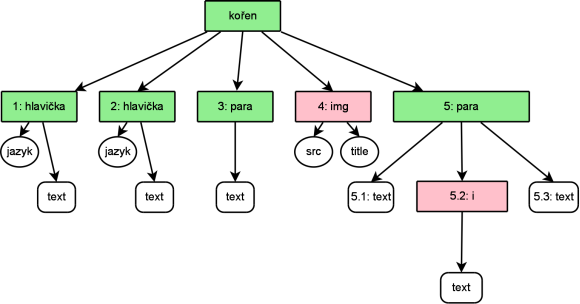

Jmenné prostory nejen v XML
by Jiří Znamenáček
Úvod
Jmenné prostory v XML (namespaces) jsou už od počátku zahaleny rouškou tajemství a spousta lidí v nich beznadějně tápe a vyrábí chyby. Což je překvapivé vzhledem k tomu, jak jednoduché ve skutečnosti jsou ^_^
Důkladný rozbor jmenných prostorů samozřejmě už tak moc triviální není, ale délka této přednášky budiž důkazem, že ke zmatení došlo ze zcela záhadných důvodů, protože skutečně o nic složitého nejde.
Význam I
Jak jsme viděli, XML je metajazyk určený pro tvorbu jiných jazyků (založených na technologii XML), které pak slouží pro sémantický popis jistých jevů. Ve výsledku to znamená, že může existovat (a také existuje) velké množství nejrůznějších XML-jazyků. V principu (i v praxi) pak mohou nastat dvě situace:
- Část jevů popisovaných nově navrhovaným XML-jazykem se kryje s jevy (nebo jejich částí), které již popisuje nějaký jazyk starší.
- Z nejrůznějších důvodů jsou v nově navrhovaném XML-jazyce použita jména elementů a atributů, která v jiném XML-jazyce mají úplně jiný význam.
Význam II
Podívejme se nejdříve na první situaci: Je jasné, že pokud nějaký nový XML-jazyk bude popisovat jevy, které se budou částečně krýt s jevy již popsanými nějakým existujícím XML-jazykem, mají návrháři nového jazyka dvě možnosti:
- zduplikovat funkcionalitu již jinde popsanou a kompletně ji zahrnout do svého nového jazyka;
- vypůjčit si již existující funkcionalitu z jiného jazyka a ve svém jazyce se na ni pouze odvolávat.
Má-li to smysl, každý rozumný člověk by si vybral variantu druhou. A to je první hlavní použití jmenných prostorů.
Význam III
Nyní k druhé situaci – existence více XML-jazyků označujích stejnými názvy (elementů a atributů) zcela rozdílné jevy. Podle kontextu má uvedený „problém“ opět dvě řešení:
- nebudou-li se takovéto jazyky používat dohromady v jednom XML-dokumentu, může nám to být všechno ukradené;
- budou-li se však používat, musíme mezi rozdílnými významy stejných jmen nějak rozlišit.
Druhá varianta je další hlavní použití jmenných prostorů.
Zavedení – elementy
Vypůjčíte-li si do svého nového XML-jazyka část funkcionality odjinud, musíte nějakým způsobem označit, které části výsledného XML se řídí podle pravidel jazyka vašeho a které podle pravidel jazyka vypůjčeného. Nejlépe si to znázorníme poetickým přirovnáním o krabicích Míly Niče:
Představují-li (do sebe správně pozanořované) krabice XML-dokument, můžeme krabice z různých jazyků označit různými barvami.
Přitom platí následující šikovné pravidlo:
Jeden ze jmenných prostorů není pro odpovídající elementy za každé situace třeba nijak specificky označovat – každý neoznačený element automaticky spadá pod něj (má tedy nějakou výchozí barvu).
Jinými slovy: Na začátku všem neoznačeným elementům přiřadíme jistý výchozí jmenný prostor (barvu) a pouze elementy vypůjčené z jiného jazyka (jmenného prostoru) specificky označíme (obarvíme barvou jinou).
Zavedení – atributy
Co se jmenných prostorů a atributů týká, je situace téměř na chlup stejná:
Patří-li nějaký atribut do jistého jmenného prostoru, prostě ho označíme odpovídající barvou (barevný štítek na barevné krabici).
Narozdíl od elementů však neplatí obdoba výchozího jmenného prostoru pro neoznačené atributy:
Atributy nepřiřazené specificky pod nějaký jmenný prostor nepatří do žádného jmenného prostoru.
Poznámka k atributům
Přiřazení všech specificky neoznačených atributů do stejného nulového jmenného prostoru se zcela jistě jeví na první pohled velmi zvláštním. Idea za tímto chováním je však poměrně jednoduchá:
Jelikož atribut daného jména může být na elementu přítomen pouze jednou, je zbytečné zpracování atributů jmennými prostory komplikovat – atributy jsou prostě vyhodnoceny v kontextu elementu, k němuž patří.
Přítomnost konkrétních atributů na elementu je samozřejmě možné předepsat ve schematu spojeném s XML-dokumentem. Přítomnost atributu s přiřazeným jmenným prostorem pak jasně signalizuje, že jsme k elementu přiřadili atribut, který není v jeho schematu popsán a pochází z jiného XML-jazyka.
Označování
V rámci XML-dokumentu se různé jmenné prostory (tedy „barvy“) přiřazují elementům (tedy „krabicím“; ale platí to též i pro atributy) pomocí prefixů, tedy částí jmen elementů (případně atributů) před dvojtečkou v jejich názvu. Jaký jmenný prostor (tedy „barvu“) daný prefix představuje, pak určuje přiřazení tohoto prefixu k identifikačnímu řetězci daného XML-jazyka pomocí atributu xmlns na příslušném elementu nebo jeho vhodném předkovi. Přitom platí následující:
- Deklarace jmenného prostoru platí na elementu, na kterém je zavedena, a na všech jeho potomcích.
-
Jmenný prostor se danému prefixu přiřazuje následující konstrukcí:
xmlns:PREFIX="IDENTIKÁTOR-JMENNÉHO-PROSTORU" -
Výchozí jmenný prostor se přiřazuje následující konstrukcí:
xmlns="IDENTIKÁTOR-JMENNÉHO-PROSTORU"
Příklad

-
Výchozí jmenný prostor dokumentu je identifikován řetězcem
mojePracovníXMLa díky svému umístění na kořenovém elementu se vztahuje na všechny neprefixované elementy v celém dokumentu (jsou to ty označené zelenou barvou). -
V dokumentu je k dispozici ještě jeden jmenný prostor, který je identifikován řetězcem
http://www.w3.org/1999/xhtml. K jeho použítí je zaveden prefixxhtmla jelikož je tak učiněno také na kořenovém elementu, je tento prefix (a tedy samozřejmě jemu odpovídající jmenný prostor) k dispozici na celém dokumentu. (V ukázce pod něj spadají dva růžově označené elementy – img a i.)
Příklad – vysvětlení
Za použití názorné Clarkovy notace je jasně vidět, že:
- Z hlediska zpracování byla jména elementů (atributy s prefixem v příkladu nebyly žádné) doplněna o příslušný identifikační řetězec jejich jmenného prostoru.
- Všechny atributy v dokumentu sice patří do stejného nulového jmenného prostoru, ale protože jsou zpracovávány v kontextu svého elementu, ke zmatení nedochází.
Jména lokální a kvalifikovaná
Je jasné, že identifikátory jmenných prostorů (a stejně tak jejich prefixy použité v daném XML-dokumentu) musí být – alespoň v rámci zpracovávaného dokumentu či rodiny dokumentů – jedinečné, aby se každé jméno elementu či atributu ve výsledku namapovalo na jedinečné označení.
Zjevně má smysl rozlišovat jména elementů a atributů:
- lokální – specifická pro daný jeden XML-jazyk (část jména za dvojtečkou, tedy bez označení jmenného prostoru);
- kvalifikovaná, univerzální – jedinečná přes všechny (přinejmenším ty použité) XML-jazyky (lokální jméno doplněné o jedinečný identifikátor daného XML-jazyka, tedy jeho jmenného prostoru).
Příklady mapování I
<ns1:dokument xmlns:ns1="ns1" xmlns:ns2="ns2">
<ns1:para>Nějaký text.</ns1:para>
<ns1:para>Nějaký <ns2:em>zvýrazněný</ns2:em> text.</ns1:para>
<ns1:para>Nějaký text.</ns1:para>
</ns1:dokument>
- Všechny elementy jsou explicitně pomocí prefixu přiřazeny pod příslušný jmenný prostor.
- Oba použité jmenné prostory jsou zavedeny na kořenovém elementu, rozsahem jejich platnosti je tak celý dokument.
Příklady mapování II
<dokument xmlns="ns1" xmlns:ns2="ns2">
<para>Nějaký text.</para>
<para>Nějaký <ns2:em>zvýrazněný</ns2:em> text.</para>
<para>Nějaký text.</para>
</dokument>
- S výjimkou elementu ns2:em spadají všechny ostatní pod výchozí jmenný prostor.
- Oba použité jmenné prostory (výchozí i ns2) jsou opět zavedeny na kořenovém elementu, a tak rozsahem jejich platnosti je opět celý dokument.
Příklady mapování III
<dokument xmlns="ns1">
<para>Nějaký text.</para>
<para>Nějaký <ns2:em xmlns:ns2="ns2">zvýrazněný</ns2:em> text.</para>
<para>Nějaký text.</para>
</dokument>
- Jmenný prostor ns2 je použit na jediném místě, proto je také přímo na tomto místě nadefinován (netřeba „zaneřáďovat“ pracovní prostor definicemi tam, kde nejsou potřeba).
Příklady mapování IV
<dokument xmlns="ns1">
<para>Nějaký text.</para>
<para xmlns:ns2="ns2">Nějaký <ns2:em>zvýrazněný</ns2:em> text.</para>
<para>Nějaký text.</para>
</dokument>
- Stejně tak dobře je ale možné nadefinovat jmenný prostor ns2 na vhodném předkovi – rozsah jeho platnosti bude omezen pouze na něj a jeho potomky.
Příklad s atributy
<dokument xmlns="ns1" xmlns:ns2="ns2" xmlns:ns3="ns3">
<para id="p1" ns3:id="text">Nějaký text.</para>
<para id="p2" ns3:id="mixed">Nějaký <ns2:em>zvýrazněný</ns2:em> text.</para>
<para id="p3" ns3:id="text">Nějaký text.</para>
</dokument>
- První atribut id zjevně patří k elementu ns1:para, proto ho není třeba nijak víc specifikovat.
- Druhý atribut ns3:id však pochází z jiného XML-jazyka (identifikovaného řetězcem i prefixem ns3) a s jazykem ns1 nemá nic společného.
Díky použití jmenných prostorů tak můžeme mít na elementu více atributů, které mají stejné lokální jméno, liší se však svým jménem kvalifikovaným. (A pro elementy samozřejmě platí totéž, pouze v jiném kontextu.)
Poznámka k identifikátorům
Zatímco pojmenování prefixů se řídí omezeními kladenými na jména elementů a atributů, pojmenování jmenného prostoru se zase řídí pravidly URI (Uniform Resource Identifier). Pro vlastní potřebu můžete používat prakticky libovolný řetězec, ale pokud půjdete s XML „do světa“, měl by být nejlépe asi jednoho z následujících dvou tvarů (plus světově jedinečný):
-
URL (Uniform Resource Locator) – typická adresa zdroje na internetu ve tvaru
protokol://doména/cesta
Příklady: http://ookami.cz/student, http://www.w3.org/2000/svg, http://www.mozilla.org/keymaster/gatekeeper/there.is.only.xul … -
URN (Uniform Resource Name) – ne tak známý identifikátor ve tvaru
urn:ObecnýIdentifikátor:SpecifickýIdentifikátor
Příklady: urn:ookami-cz:student, urn:uuid:E7F73B13-05FE-44ec-81CE-F898C4A6CDB4, urn:isbn:0451450523 …
Důležitá poznámka: Že je spousta jmenných prostorů ve tvaru URL a že na příslušných adresách je často nějaká informace k danému XML-jazyku, je záležitost promyšleně náhodná – prostě se adresa dobře čte a má jasný význam, tak proč tam i něco smysluplného neumístit. XML-parseru je to však zcela putna – pro něj je kvalifikované jméno pouze obyčejný řetězec, který jedinečně rozlišuje jednotlivé elementy a atributy od sebe.